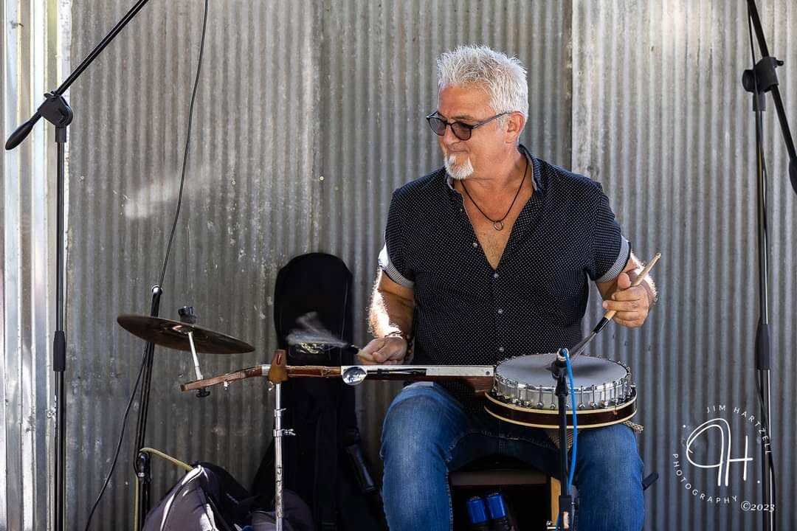
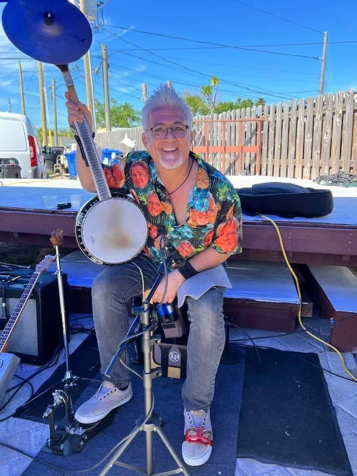
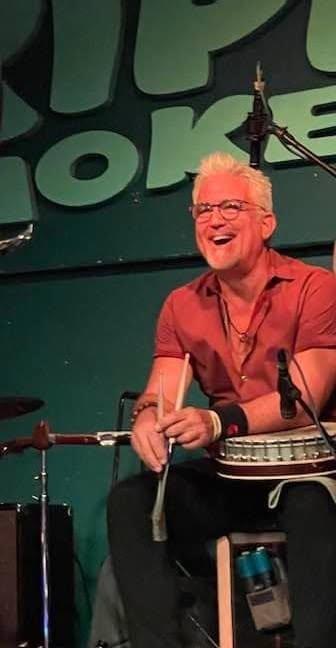
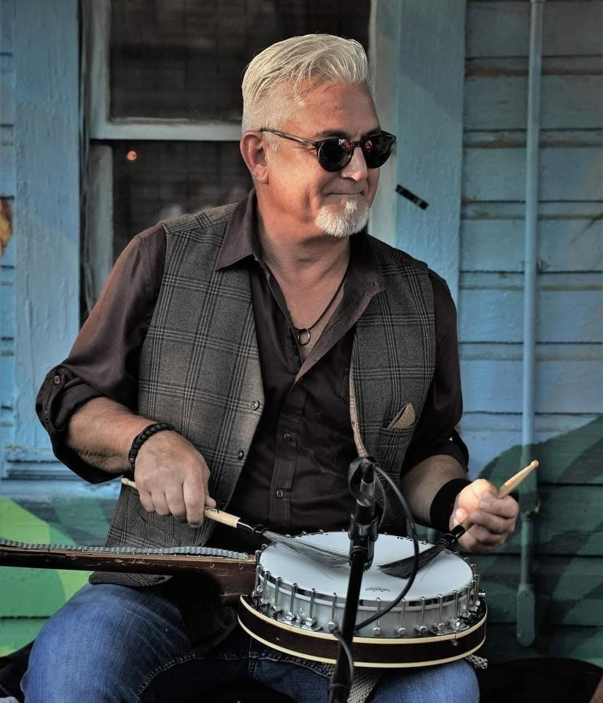

Experience the BanJoey.
Tampa Bay drummer Joey Interrante's fusion instrument: Cajón, bass pedal, cymbal, and banjo shell in one tiny but mighty drum kit.
See how it worksWhat is the BanJoey
He needed a sound that didn't exist anywhere, so he went and made it.
A banjo shell on a Cajón box, driven by a bass pedal, topped with a cymbal, with snare wires underneath. Joey built it because nothing on the market had the sound he wanted.
The name came from bandmate Gale Trippsmith, who introduced him onstage one night: "this is Joey playing a BanJoey." It stuck.
Gallery
The BanJoey up close.



About Joey
A lifelong drummer who still makes his own gear.
Joey Interrante is a professional drummer based in Tampa Bay. He performs regularly across Florida with artists including Gale Trippsmith and the Kid Royal Band, records remote drum tracks through Hip Pocket Studios, and still carries his own gear to every single gig.
The BanJoey came from a simple frustration: nothing on the market did what he needed. So he designed it, put it together by hand, refined it over years of live performance, and has been turning heads with it ever since.

More from Joey Interrante
The BanJoey is one part of the story.
Get in touch
Say hello.
Questions about the BanJoey, booking a show, or just want to talk music? Send Joey a message.